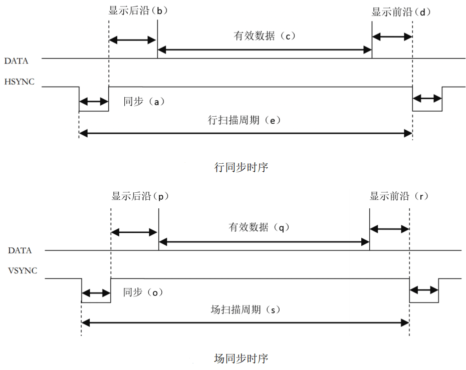
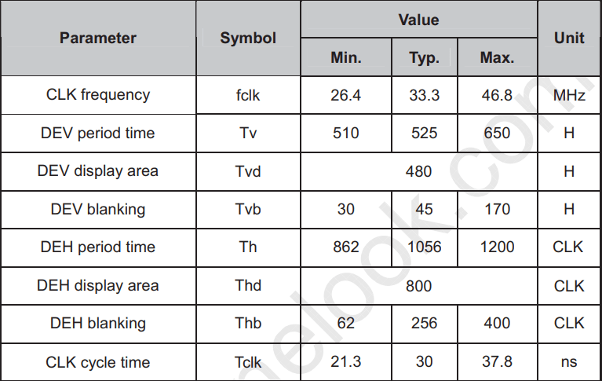

RGB LCD 示例
先介绍时序
RGB LCD 显示图像的原理和 VGA 类似，都是在计算机内部以数字的方式生成需要显示的图像信息，再通过模数转换的方式，将这些数字的图像信息转变为 RGB 三原色模拟信号，以及行、场同步信号。
下面就介绍 VGA 的时序

上图分别是 VGA 在数据传输中的行同步、场同步时序
从时序图中可以看出，不论是显示一行数据还是一列数据，都需要一个同步(sync)信号，数据的传输需要在两个同步信号的脉冲之间完成
每一行的数据包括显示前沿(back porch)、有效数据(active viedo)、显示后沿(front porch)
其中的有效数据就是我们常说的分辨率，而显示前后沿的参数需要参考具体的分辨率与帧数进行设置，相关参数可以参考典型参数，链接在此： http://www.tinyvga.com/vga-timing
这块屏幕的控制时序略有不同，相关参数的设置可以查看规格书
下面提供了 LCD 相关时序的截图


上面一张图是时序中的参数表，下面的图是时序图
从时序图中看出，这块屏幕可以不用设置前后沿，可以只设置消影(blanking)时间，通过实际的程序证明，两种方式都是可以的
Verilog实现
pll
板载的晶振时钟为 24MHz ，但是我们的屏幕要求 33.3MHZ 的时钟，所以我们需要使用 pll 产生我们需要的时钟
这里需要使用到 IP Core Generate ，位置在 Tools -> IP Core Generate

双击 PLL ，在弹出窗口 language 选择 Verilog ，CLKIN 为 24MHz ，CLKOUT 为 200MHz，CLKOUTD 要选择 Enable，然后生成时钟为 33.33MHz，Tolerance 选择 0.2%

osc
系统的时钟可以使用外部时钟提供，也可以使用 OSC 生成的时钟
同样也是使用 IP Core Generate
找到 OSC 并双击打开进行分频的设置
在帮助页面可以知道，GW1N-1 系列的 fpga 的 OSC 是从 240MHz 进行分频的，所以要产生 24MHz 的时钟，只需要进行 10 的分频
lcd时序产生
localparam V_BackPorch = 16'd6; //0 or 45
localparam V_Pluse = 16'd5;
localparam HightPixel = 16'd480;
localparam V_FrontPorch= 16'd62; //45 or 0
localparam H_BackPorch = 16'd182; //NOTE: 高像素时钟时，增加这里的延迟，方便K210加入中断
localparam H_Pluse = 16'd1;
localparam WidthPixel = 16'd800;
localparam H_FrontPorch= 16'd210;
localparam PixelForHS = WidthPixel + H_BackPorch + H_FrontPorch;
localparam LineForVS = HightPixel + V_BackPorch + V_FrontPorch;
首先是设置时序相关的参数：前沿、后沿、有效像素
关于显示前沿、后沿，前面也说了，可以合并为一个消影时间，就是可以把其中一个设置为0，另一个设置为消影时间。反正前后沿的时间加起来符合表中的时间要求就可以
always @( posedge PixelClk or negedge nRST )begin
if( !nRST ) begin
LineCount <= 16'b0;
PixelCount <= 16'b0;
end
else if( PixelCount == PixelForHS ) begin
PixelCount <= 16'b0;
LineCount <= LineCount + 1'b1;
end
else if( LineCount == LineForVS ) begin
LineCount <= 16'b0;
PixelCount <= 16'b0;
end
end
//注意这里HSYNC和VSYNC负极性
assign LCD_HSYNC = (( PixelCount >= H_Pluse)&&( PixelCount <= (PixelForHS-H_FrontPorch))) ? 1'b0 : 1'b1;
assign LCD_VSYNC = ((( LineCount >= V_Pluse )&&( LineCount <= (LineForVS-0) )) ) ? 1'b0 : 1'b1;
这段代码产生同步信号，需要注意的是，这块屏幕的同步信号是负极性使能
assign LCD_DE = ( ( PixelCount >= H_BackPorch )&&
( PixelCount <= PixelForHS-H_FrontPorch ) &&
( LineCount >= V_BackPorch ) &&
( LineCount <= LineForVS-V_FrontPorch-1 )) ? 1'b1 : 1'b0;
//这里不减一，会抖动
这段代码设置 LCD 使能图像显示，这块屏幕需要控制一个管脚用作显示开关，实际这个信号就是传输图像有效的那 800*480 的数据时置 1
assign LCD_R = (PixelCount<200)? 5'b00000 :
(PixelCount<240 ? 5'b00001 :
(PixelCount<280 ? 5'b00010 :
(PixelCount<320 ? 5'b00100 :
(PixelCount<360 ? 5'b01000 :
(PixelCount<400 ? 5'b10000 : 5'b00000 )))));
assign LCD_G = (PixelCount<400)? 6'b000000 :
(PixelCount<440 ? 6'b000001 :
(PixelCount<480 ? 6'b000010 :
(PixelCount<520 ? 6'b000100 :
(PixelCount<560 ? 6'b001000 :
(PixelCount<600 ? 6'b010000 :
(PixelCount<640 ? 6'b100000 : 6'b000000 ))))));
assign LCD_B = (PixelCount<640)? 5'b00000 :
(PixelCount<680 ? 5'b00001 :
(PixelCount<720 ? 5'b00010 :
(PixelCount<760 ? 5'b00100 :
(PixelCount<800 ? 5'b01000 :
(PixelCount<840 ? 5'b10000 : 5'b00000 )))));
这段代码用来产生 LCD 的测试数据，产生彩条显示
VGAMod D1
(
.CLK ( CLK_SYS ),
.nRST ( nRST ),
.PixelClk ( CLK_PIX ),
.LCD_DE ( LCD_DEN ),
.LCD_HSYNC ( LCD_HYNC ),
.LCD_VSYNC ( LCD_SYNC ),
.LCD_B ( LCD_B ),
.LCD_G ( LCD_G ),
.LCD_R ( LCD_R )
);
最后就是在 TOP 中进行实例化
整个工程可以在 [https://github.com/sipeed/Tang-Nano-examples/tree/master/example_lcd][https://github.com/sipeed/Tang-Nano-examples/tree/master/example_lcd] 下载